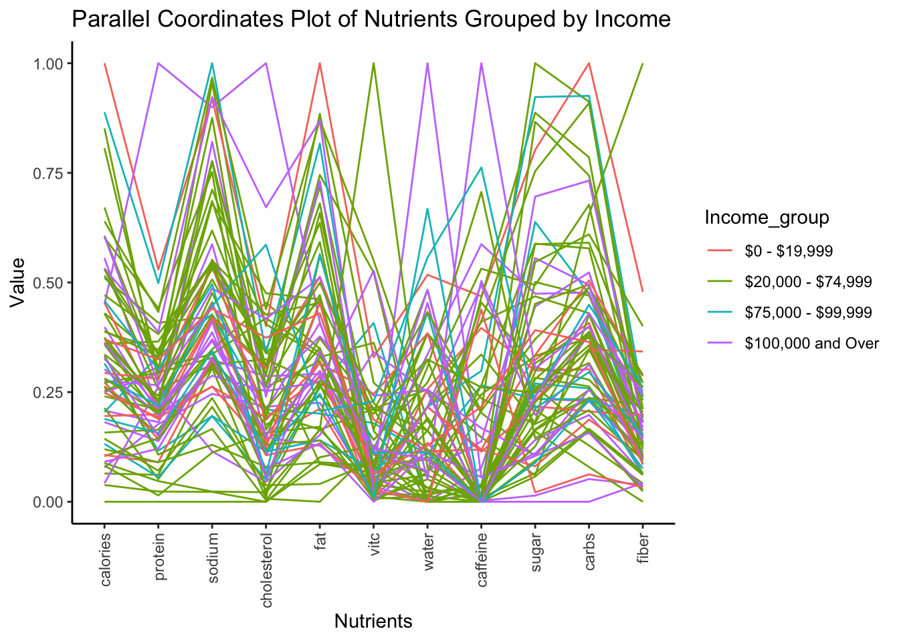

Chapter 4 Results
4.1 Heatmap of Height vs Weight by Gender and Age
We want to examine the relationship between height and weight and gender and age’s effects on this relationship.
We see here several trends we observe in life and reveal some less obvoius ones.
First, the range of adult female weights is centered lower than the male one. One less obvious observation about this is that the distribution of adult female weights is denser than the male ones. This could be due to the fact that men tend to be able to grow taller than women so the spread will be greater.
Another trend we see is that the heights and weights of minors stays relatively the same until a certain point. If we did another threshold where puberty starts we would probably see an even more distinct cutoff point. The under 18 groups are able to reach about the same range of heights as their adult counterparts, however they don’t even come close to the outliers in weight in the adults.
4.2 Examination of Height vs. Weight by Age Started Smoking
Here we want to see if the age someone starts smoking affects their height and weight later in life. We hypothesize the earlier one starts smoking the more stunted their growth.
4.2.1 Scatter of Height vs. Weight by Smoking Age
Here we don’t see a pattern between smoking and height and weight. The colors of the points seem roughly uniformly distributed. We take a closer look at height with a some boxplots:
4.2.2 Boxplots of Height and Weight by Smoking Age

And here we can also see the height distributions don’t seem to change based on when the participant started smoking.
We also see the same is true for weight so it appears the age a smoker starts smoking doesn’t seem to be correlated with their height and weight, which is surprising to us because our initial hypothesis was that their height and weight would be stunted.
4.3 Heatmap of Smoking vs. Alcohol faceted by Cancer
In this visualization we want to see if people with cancer smoke or drink more, possibly leading to their cancer.
Here we see surprisingly that between drinking and smoking there does not seem to be a correlation in the non cancer group as we would imagine there is a positive correlation. However it appears the cancer group drinks significantly less than the non cancer group, possibly due to medication. Finally we see that smoking appears to not be correlated with cancer besides one outlying group at 60 cigarettes smoked per day, which could be because we take all cancer types not just lung cancer.
4.4 Scatterplot of Age vs. BMI by Marital Status
Here we want to see the relationship between age and BMI and how it is affected by marital status. One hypothesis we have going in is the idea that people “let themselves go” the older they get and once they are married.
First we see there is little correlation between BMI and age regardless of marital status. The data is relatively uniformly distributed throughout the graph. Next we observe there appears to be no difference between the married and not married groups. We define married as: currently married or living with partner and we consider not married as: widowed, divorced, separated, and never married. Looking at this graph it seems there is not enough evidence to say that people “let themselves go” after they get married.
4.5 Biplot of Total Nutrient Intake
Now we want to see the correlations and clustering between different nutrient intakes.
4.5.1 Biplot with just rotation vectors:
We see our first two PCs only account for 61.2% of the variance in the data, however we still see trends in our rotation vectors that seem to align with our real-world observations. Calories are somewhat positively correlated with all the main macro nutrients because the more someone eats, the more nutrients they get. However, it is the least correlated with water intake and vitamin c which don’t necessarily provide calorie intake. Then we see two clear correlated groups of features: cholesterol, protein, sodium, and fat which can be accounted to eating more meat, and fiber, carbohydrates, and sugar which can be attributed to grains. These two groups seem to not be correlated with each other which makes sense because they are not linked by many common foods. Finally, caffeine has a very small vector because it seems to not be correlated with the rest of the data.
4.5.2 Biplot with points:
We subsample 120 points for readability in the graph while still maintaining our rotation vectors. It looks like the distribution has one main cluster in the left half of the graph below the average total nutrient intake where most people are, and then there is a more sparse spread beyond that, maybe because people who eat more tend to have more specialized or unhealthy diets. Additionally, perhaps there are more outliers on the right side because you can always eat more but it’s physically impossible to eat below a certain threshold.
4.6 Parallel Coordinates Plot of Nutrients by Income Group
Here we want to see if diet changes by income group.

Here we can see that while there are no obvious trends in this tiny subset of our data, we can see that there are some minor groupings by color in areas like protein/sodium/cholesterol where the 20,000-74,999 group is clustered together higher than the 100,000 and over group. We find it interesting that we see smaller more localized trends, however we don’t see one large, overarching trend in income vs. nutrients.
4.7 Heatmap of Work Hours vs. Caffeine Consumption

In examining the relationship between work hours and caffeine consumption after removing drastic outliers, we shockingly see that there is no correlation between the two. The majority of people drink 1-2 cups (100-200mg) of coffee a day with some minor outliers evenly distributed throughout different values of weekly work hours. We find the lack of correlation here more surprising than seeing one because we expected to see a positive relationship between the two.
4.8 Distribution of Work Hours for different Education Levels

In the above histograms, we notice that the number of hours worked in a week does not vary considerably by the education level. As expected, we see that most individuals work for 40 hours per week, irrespective of education level. We also notice that individuals that are college graduates or above, have a larger proportion of people working 50 hours per week compared to that in any other group. Additionally, college graduates have a lower proportion of individuals working less than 40 hours in comparison to that in any other group. This gives us an idea that individuals who at least have a college degree are more likely to work longer hours.
4.9 Mosaic Plot of Depression vs Military Status
In the above mosaic plot, we notice that the proportion of people who feel depressed at most monthly is higher among those individuals who served in the army. Although the difference is very slight, we can clearly tell this difference by comparing the stack of cells for “Daily”, “Weekly” and “Monthly” groups. We expected this finding because it is widely known that serving in the army exposes individuals to circumstances that harm mental health.
4.10 Mosaic Plot of Education Level vs Depression vs Income
We are able to make some interesting observations from the above mosaic plot. Firstly, we notice that individuals with higher education tend to make more money. Secondly, we notice that individuals who make lesser money feel more depressed. We also see that the “College / AA Degree 0-20k” group has the highest proportion of depression. This gives us an indication that individuals who pursue their education longer but make less money, tend to be more depressed. This could be because of student debt, or simply because they compare themselves with others with similar higher education who make more than them. While our reasoning is nothing more than speculation, we can certainly tell that individuals who make more money are less likely to feel depressed